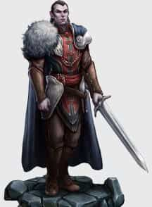
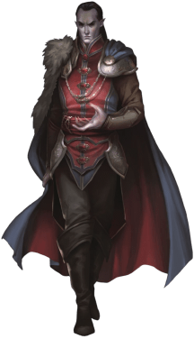

- Средняя? Нежить (перевёртыш), законно-злая, именной НИП
- Класс Доспеха 16 (природный доспех)
- Хиты 144 (17к8 + 68)
- Скорость 30 футов
- Сил18 (+4)Лов18 (+4)Тел18 (+4)Инт20 (+5)Мдр15 (+2)Хар18 (+4)
- Спасброски Лов +9, Мдр +7, Хар +9
- Навыки Восприятие +12, Магия +15, Религия +10, Скрытность +14
- Сопротивление урону некротическая энергия; дробящий, колющий, рубящий от немагических атак
- Чувства тёмное зрение? 120 футов, пассивное Восприятие 22
- Языки Общий, Бездны, Великаний, Драконий, Инфернальный, Эльфийский
- Опасность 15 (13 000 опыта)
- Бонус мастерства +5
Перевёртыш. Если Страд не находится под солнечным светом и не стоит в текущей воде, он может действием превратиться в Крошечную летучую мышь [bat], Среднего волка [wolf] или Среднее облако тумана, или же принять свой истинный облик.
Находясь в облике летучей мыши, Страд не может говорить, его скорость ходьбы равна 5 футам, и у него есть скорость полёта в 30 футов. В обличии волка его скорость равна 40 футам. Все его характеристики за исключением размера и скорости остаются теми же самыми. Всё, что он носит, превращается вместе с ним, а то, что он несёт — нет. Он принимает свой истинный облик, если умирает.
Находясь в облике тумана, Страд не может совершать действий, говорить и манипулировать предметами. Он ничего не весит, обладает скоростью полёта 20 футов, может парить и может входить в пространство враждебных существ и останавливаться там. Кроме того, если через некое пространство может проходить воздух, то это же может сделать и туман, без протискивания, хотя и не может проходить сквозь воду. Он совершает с преимуществом спасброски Силы, Ловкости и Телосложения, и обладает иммунитетом к немагическому урону, за исключением урона, который он получает, находясь под солнечным светом.
Легендарное сопротивление (3/день). Если Страд проваливает спасбросок, он может вместо этого сделать спасбросок успешным.
Туманный побег. Если хиты Страда опускаются до 0 за пределами места отдыха, он вместо того, чтобы потерять сознание, превращается в туманное облако (как сказано в описании особенности «Перевёртыш»), при условии, что он не находится под солнечными лучами или в текущей воде. Если он не может превратиться, он уничтожается. Пока в туманном облике у него 0 хитов, он не может возвращаться в облик вампира, и обязан вернуться в место отдыха в течение 2 часов, иначе будет уничтожен. Достигнув места отдыха, он принимает облик вампира. После этого он становится парализованным, пока не восстановит хотя бы 1 хит. Проведя 1 час в месте отдыха с 0 хитов, он восстанавливает 1 хит.
Регенерация. Страд восстанавливает 20 хитов в начале своего хода, если у него есть хотя бы 1 хит, и он не находится ни под солнечными лучами ни в текущей воде. Если он получает урон излучением или урон от святой воды, эта особенность не действует в начале его следующего хода.
Использование заклинаний. Страд является заклинателем 9-го уровня. Его базовой характеристикой является Интеллект (Сл спасбросков от заклинаний 18, +10 к попаданию атаками заклинаниями). У Страда подготовлены следующие заклинания волшебника:
- Заговоры (неограниченно): волшебная рука, фокусы, луч холода;
- 1-й уровень (4 ячейки): понимание языков, туманное облако, усыпление;
- 2-й уровень (3 ячейки): обнаружение мыслей, порыв ветра, отражения;
- 3-й уровень (3 ячейки): восставший труп, огненный шар, необнаружимость;
- 4-й уровень (3 ячейки): усыхание, высшая невидимость, превращение;
- 5-й уровень (1 ячейка): оживление вещей, наблюдение;
Паучье лазание. Страд может лазать по сложным поверхностям, включая потолки, без совершения проверок характеристик.
Слабости вампира. Страд обладает следующими слабостями:
Запрет. Он не может войти в жилище без приглашения одного из обитателей.
Урон от текущей воды. Он получает 20 урона кислотой, если оканчивает ход в текущей воде.
Кол в сердце. Если колющее оружие, изготовленное из дерева, вонзить в сердце Страда, пока он недееспособен в своём месте отдыха, вампир станет парализованным, пока кол не вынут.
Гиперчувствительность к солнечному свету. Страд получает 20 урона излучением, если начинает ход под солнечным светом. Находясь на солнечном свету, он совершает с помехой броски атаки и проверки характеристик.
Действия
Мультиатака (только в облике вампира). Страд совершает две атаки, только одна из которых может быть укусом.
Безоружный удар (только в облике вампира или волка). Рукопашная атака оружием: +9 к попаданию, досягаемость 5 футов, одна цель. Попадание: 8 (1к8+4) рубящего урона плюс 14 (4к6) урона некротической энергией. Если цель существо, то вместо причинения рубящего урона Страд может схватить цель (Сл высвобождения 18).
Укус. Рукопашная атака оружием: +9 к попаданию, досягаемость 5 футов, одно согласное существо или существо, схваченное Страдом, недееспособное или опутанное. Попадание: 7 (1к6+4) колющего урона плюс 10 (3к6) урона некротической энергией. Максимум хитов цели уменьшается на количество, равное полученному урону некротической энергией, а Страд восстанавливает такое же количество хитов. Уменьшение хитов длится до тех пор, пока цель не окончит продолжительный отдых. Цель умирает, если этот эффект уменьшает максимум её хитов до 0. Гуманоид, убитый этим способом, а после закопанный в землю, восстаёт следующей ночью в качестве порождения вампира [vampire spawn], находящегося под контролем Страда.
Очарование. Страд нацеливается на одного Гуманоида, которого видит в пределах 30 футов. Если цель видит Страда, она должна преуспеть в спасброске Мудрости Сл 17 от этой магии, иначе станет очарована. Очарованная цель считает Страда верным другом, о котором нужно заботиться и которого нужно защищать. Несмотря на то, что цель не находится под контролем Страда, она выполняет его просьбы и искренне прилагает все нужные усилия, и будет согласной целью для укуса. Каждый раз, когда Страд или его прислужники делают цели что-нибудь плохое, цель может повторить спасбросок, оканчивая эффект на себе при успехе. В противном случае эффект длится 24 часа, либо пока Страд не будет уничтожен, либо он с целью не окажутся на разных планах существования, либо пока Страд не окончит эффект бонусным действием.
Дети ночи (1/день). Страд магическим образом призывает 2к4 роя крыс [swarm of rats] или летучих мышей [swarm of bats], при условии, что на небе нет солнца. Находясь на открытом воздухе, Страд может вместо этого призвать 3к6 волков [wolf]. Вызванные существа приходят через 1к4 раунда, действуют как союзники вампира и подчиняются его устным командам. Звери остаются на 1 час, пока Страд не умрёт, или он не отпустит их бонусным действием.
Легендарные действия
Страд может совершить 3 легендарных действия, выбирая из представленных ниже вариантов. За один раз можно использовать только одно легендарное действие, и только в конце хода другого существа. Страд восстанавливает использованные легендарные действия в начале своего хода.
Перемещение. Страд перемещается на расстояние, не превышающее его скорость, не провоцируя атаки.
Безоружный удар. Страд совершает одну безоружную атаку.
Укус (стоит 2 действия). Страд совершает одну атаку укусом.
Действия логова
В то время как Страд находится в Замке Равенлофт, он может совершать действия логова до тех пор, пока не окажется недееспособным. По инициативе 20 (в случае ничьей проигрывает всем конкурентам) Страд может применить один из следующих вариантов действий логова или отказаться от любого из них в этом раунде:
- До значения инициативы «20» следующего раунда Страд может проходить сквозь сплошные стены, двери, потолки и полы, как будто их там нет.
- Страд контролирует любое количество дверей и окон, которые он может видеть, заставляя каждое из них открываться и закрываться по своему желанию. Закрытые двери могут быть магически заблокированы (требуется успешная проверка Силы Сл 20 для принудительного открытия), пока Страд не решит закончить эффект, или пока он снова не воспользуется этим действием логова.
- Страд вызывает злой дух того, кто умер в замке. Привидение появляется рядом с враждебным существом, которое Страд видит, и совершает нападение на это существо, а затем исчезает. Привидение имеет параметры спектра [specter].
- Страд нацеливается на одно существо Среднего или меньшего размера, которое отбрасывает тень. Тень цели должна быть видна Страду и находиться в пределах 30 футов от него. Если цель проваливает спасбросок Харизмы Сл 17, тень отделяется от неё и становится тенью [shadow], которая подчиняется командам Страда, действуя по инициативе 20. Заклинание высшее восстановление [greater restoration] или снятие проклятья [remove curse], наложенное на цель, восстанавливает естественную тень, но только если её тень-Нежить не уничтожена.
Вампирские приспешники
Всякий раз, когда Страд появляется в другом месте, кроме его гробницы или месте, указанном в карточке, бросьте к20 и сверьтесь с таблицей «Приспешники Страда», чтобы определить, каких существ он приносит с собой, если таковые имеются.
Приспешники Страда
к20 Существ 1-3 1к4 + 2 лютых волков [dire wolf] 4-6 1к6 + 3 упырей [ghoul] 7-9 1к4 + 2 зомби Страда [Strahd zombie] 10-12 2к4 роев летучих мышей [swarm of bats] 13-15 1к4 + 1 порождений вампира [vampire spawn] 16-18 3к6 волков [wolf] 19-20 нет
Если персонажи находятся в помещении, существа Страда выбивают двери и окна, чтобы добраться до них, или ползут по земле, или пробираются через дымоход. Порождение вампира [vampire spawn] (всё, что осталось от партии авантюристов, которых Страд победил давным-давно) не может войти в помещение где находится персонаж, если только его не пригласят.
СЕРДЦЕ СКОРБИ
Страд может позволить себе действовать безрассудно, его жизнь дополнительно защищена особым предметом в виде гигантского хрустального сердца, которое скрыто внутри замка Равенлофт.
Любой урон, наносимый Страду, перенаправляется в Сердце Скорби (см. главу 4, область K20). Если сердце получает урон, который уменьшает его хиты до нуля, оно разрушается, а Страд получает любой оставшийся урон. Сердце скорби имеет 50 хитов и восстанавливает их на рассвете, при условии, что оставался по крайней мере 1 хит. Страд может, бонусным действием в свой ход, разорвать связь с Сердцем Скорби, чтобы он не получал урон, нанесенный сердцу. Страд может восстановить свою связь с Сердцем Скорби бонусным действием в свой ход, но только в Замке Равенлофт.
Эффект защиты, предоставляемый Сердцем Скорби, может леденить душу, потому как раны Страда быстро исчезают. Например, критический удар может вывихнуть Страду челюсть, но только на мгновение; вскоре она возвращается на место.
Способность Сердца Скорби поглощать урон подавляется, если оно или Страд полностью находятся в области заклинания преграда магии.
Описание
Тактика Страда
Поскольку всё приключение вращается вокруг Страда, вы должны грамотно его отыграть и сделать всё возможное, чтобы сделать ужасным и хитрым противником персонажей игроков.
Когда вы играете сцену со Страдом, помните следующие факты:
- Страд атакует в самый выгодный момент и с самого выгодного положения.
- Страд знает, когда пора отступить. Если он получит больше урона, чем может восстановить, он движется за пределы досягаемости бойцов ближнего боя и заклинателей, или улетает (с помощью вызванных волков или роя летучих мышей или крыс, чтобы прикрыть его отступление).
- Страд наблюдает за персонажами, чтобы понять, кто из них наиболее легко поддается чужому влиянию, а затем пытается очаровать персонажей, у которых низкие значения Мудрости, и использовать их в качестве рабов. По крайней мере, он может использовать очарованного персонажа, чтобы защищать его от других членов группы приключенцев.
Страд фон Зарович с его острым умом и тёмным сердцем — грозный противник. Мужество и многообразие жизни для него утеряны навечно.
Хоть Страда и можно встретить практически в любом месте его владений, вампир всегда встречается в месте, указанном картой из предсказаний, если только он не был вынужден вернуться в свою гробницу в катакомбах замка Равенлофт.
Страд фон Зарович — Бестиарий
Страд фон Зарович [Strahd von Zarovich]COS
Галерея






Комментарии
Действие Безоружный удар
Оригинал:
Melee Weapon Attack:+9, Reach 5 ft., one target
Hit: 8 (1d8+4) slashing damage plus 14 (4d6) necrotic damage
If the target is a creature, Strahd can grapple it (escape DC 18) instead of dealing the slashing damage.
Как сейчас:
Рукопашная атака оружием: +9 к попаданию, досягаемость 5 футов, одна цель.
Попадание: 8 (1к8+4) рубящего урона плюс 14 (4к6) урона некротической энергией.
Вместо причинения урона вампир может схватить цель (Сл высвобождения 18).
Должно быть:
Рукопашная атака оружием: +9 к попаданию, досягаемость 5 футов, одна цель.
Попадание: 8 (1к8+4) рубящего урона плюс 14 (4к6) урона некротической энергией.
Если цель существо, то вместо причинения рубящего урона Страд может схватить цель (Сл высвобождения 18).
Из-за ошибки Страд теряет некротический урон, который наносит даже если не бьет, а хватает цель.
Что касается "запретов" - есть отдельное творчество на тему "слухов о Страде", которые можно использовать, чтобы запутать игроков. Модуль в целом доброжелателен к импровизации вокруг фигуры главного антагониста, нету "единого стандарта" - и это очень здорово, когда у всех выходит свой злодей
Сначала он им встречается и дерется с ними держа кубок вина, во время боя стараясь не пролить ни 1 драгоценной капли.
Потом "Снятие 3 уровня ограничения" и так до вступления в полную силу.
Для Страда снятие уровней ограничения не бесплатно, это болезненно и ресурсно дорого, он старается этого не делать. Полное снятие же ведет к необратимым последствиям - это джокер в колоде, тут уж персонажам лишь бы выжить.
Вообще вампиры слабы как противники. Я в своей кампании выставил 2 вампиров вампир-рыцарь и вампир-маг 15 уровня сложности, герои 6 уровня разобрались с ними без труда, с 2 вампирами. А тут 1.
Только участие Логова может решить в пользу Страда.
Страд НИКОГДА не пойдёт в лобовую атаку. Он опытен, невероятно умён и он военный тактик. Он знает слабые и сильные стороны персонажей, досконально их изучив заранее. Он знает их заклинания, их классовые особенности, их магические предметы. Он готов к встрече.
Он сверхмобилен, знает каждый закуток, есть паучье лазанье, легендарное передвижение, прохождение сквозь стены. Умный Страд никогда не окажется в солнечном свете. Если сражение в замке, то выиграть его практически невозможно. Вне замка он обернётся мышью или волком для побега, а лучше скажет Буцефалу быть рядом на Эфирном плане и ждать нужного момента.
Страд терпелив. Он уйдёт, быстро восстановится, скроется, тихо просочится сквозь стену, нанесёт молниеносную атаку и просто сразу исчезнет в стене, потолке или полу. Хотите сделать заготовленное действие с заклинанием? Удачи потратить ячейку зря, пока ждёте, а он не появляется. Хотите кинуть контрспелл на его магию? Нет, потому что он в скрытности и вы его не видите. Если он в замке, то призванные монстры могут использовать действие "помощь", чтобы он атаковал с преимуществом. Он может запирать двери и окна, разделяя группу. У него есть и союзники, если вам всего этого покажется мало. И не забывайте очаровывать всех.
Страда не нужно усиливать, он вытрет пол в замке любой группой 10-го уровня, если правильно им играть.